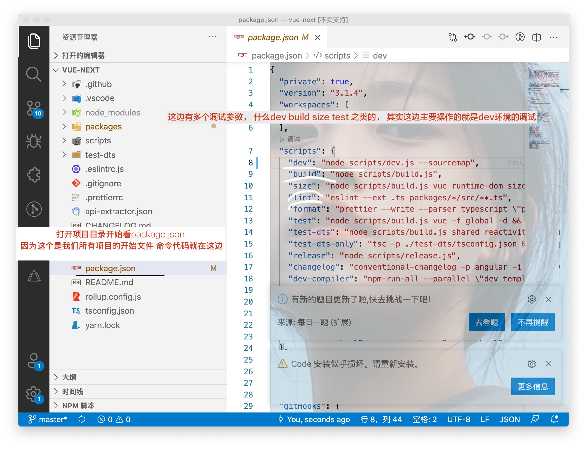
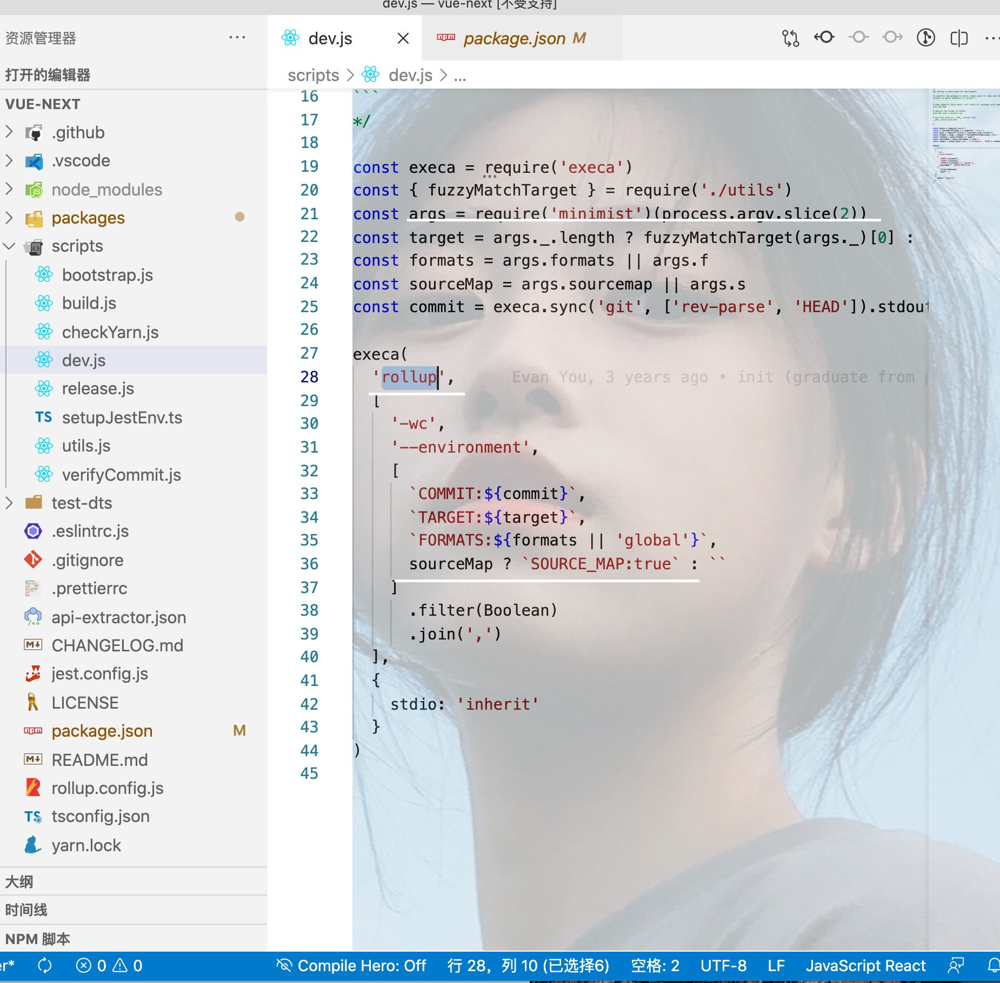
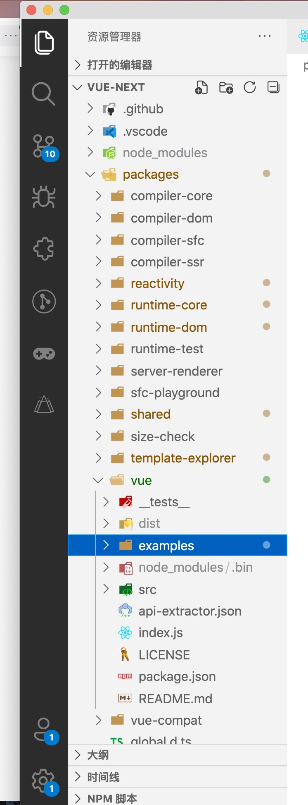

所谓框架的调试?
本章意如标题，就是来简单的告诉你怎么去调试或者阅读大佬们手里的把掐（框架）， 比如你想阅读尤大的vue， 那我们该如何下手呢？
Vue3：（ PS:综下内容只是在某些意义上的导读，免责声明免责声明免责声明 ）
- [扒项目] 首先肯定是扒代码（自己去github扒），下来只有不用管任何鬼文件，直接找到当前项目最大层级的目录中的
package.json，在同级目录下安装依赖(yarn 或 npm install), 如下图  - [找入口] 下载完成之后就要开始找项目入口
package.json中， 一般都是main为入口，当然啊这个main一般情况下 是找不到对应的文件路径的（或是根本就不存在main字段）（因为有些项目是要在打包之后才会有相应的路径出现）要不我还是先解释下main这个字段的含义？main属性主要使用在引用或者开发某个依赖包的时候需要此属性的支持，不然工程中无法用import导入依赖包；不使用main属性的话我们可能需要这样写引用：require("some-module/xx/xx.js")(说下我自己的两种找入口的方式)- 那为什么有的项目就没有此配置项， 因为人家开发鸭！在这种情况下我们需要找到入口文件，比如当前这个vue3 在scripts 里面一堆这种node 命令， 以我们经验主义我肯定会先从dev看起，我们可以看到对应的value是
node scripts/dev.js --sourcemap, 接下来看到scripts下的dev.js文件（看下面的图）我们可以清晰的看到，这里面执行了一个rollup的命令，我其实也不知道这个execa是啥玩意，但我的直觉告诉我这个和node里面的进程类似，所以我断定他这是在执行rollup命令 ，然后我们就要rollup.config.js里面梅开二度，看到代码多不要慌，我们还是要以经验主义来查看这边， 这个就是类似webpack那种配置文件，肯定会有什么，入口 出口字段之类的（entry、output这些） - 第二种方式就比较简单了，就是直接去你使用当前库的项目里面的node_modules 找到相对应所学习的文件，在找到他们的package.json里面的入口文件，拿着那个路径，回到本项目里面找（不建议）
- 那为什么有的项目就没有此配置项， 因为人家开发鸭！在这种情况下我们需要找到入口文件，比如当前这个vue3 在scripts 里面一堆这种node 命令， 以我们经验主义我肯定会先从dev看起，我们可以看到对应的value是
- [切入点] 果不其然功夫不负有心人啊，看这边又一个entryFile的字段了；这边说不同环境不同地址，然后我们在dev环境应该就是 src/index.js ，然后我们再去这个目录下看一下！诶？？？ 等下，这块只有一个src/index.js这是哪里的目录？？？ 别慌 我们仔细看一下这段代码（第二张），我们看见这个又一个resolve，这厮是个啥，我们看看（第三张图片）这边有写大入口是packages 然后小入口是通过process.env传过来的，这个是在我们之前看的scripts/dev.js里面写的 (第四张图)； 得出来入口文件是 packages/vue/src/index.ts ，也就是说 packages/vue 就是我们这个包的核心入口，其他的都为配件存在然后我想 工程目录就不必要分析了吧。wait…


- [工程目录]
 这个版本的vue把模块化分的特别清晰，同时也就证明每个某块的功能和生命力足够强大（每个都可以作为独立的项目展示出来，每个都有自己独立的package.json 也就是都是独立的小项目），这些根据名字就可以断定出来是干啥的了，我就不啰嗦了吧，像一些compiler-dom、runtime-dom这些应该都不需要解释吧… 值得一说的是reactivity 这个是新版本新增的响应，然后就是vue文件夹下面的牛马， examples是提供给我们调试用的，里面包含了老版本的vue和新版本的vue一些常规操作，然后我们可以在这里面进行调试和学习 - [新的开始] 如果你已经看过了examples里面的文件，你就能清楚的判断出怎么去调试了，但 这只是一个开始…
antd：
- [扒项目] 综上一样； 首先肯定是扒代码（自己去github扒），下来只有不用管任何鬼文件，直接找到当前项目最大层级的目录中的
package.json，在同级目录下安装依赖(yarn 或 npm install) - [找入口] 他这个和vue的不太一样， 这个是抽象为两个入口， 一个是demo文档查看， 另一个就是单纯地组件。不多比比 看到 main入口 里面很显然找不到所谓的
lib/什么什么根本就没有这个lib的文件夹好吧，你可以去看看官方给出的文档，当然我不会这么做， 还是根据经验来看一下scripts里面都有什么， 直接看到 start， 直接启动 就ok了。 （先溜一步…改日再说）